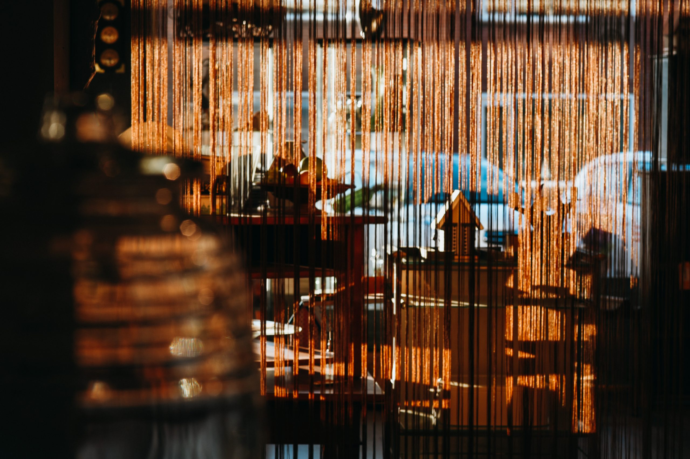
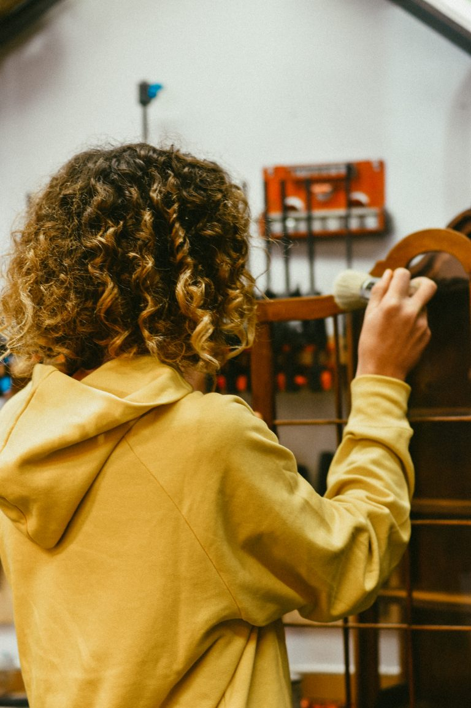
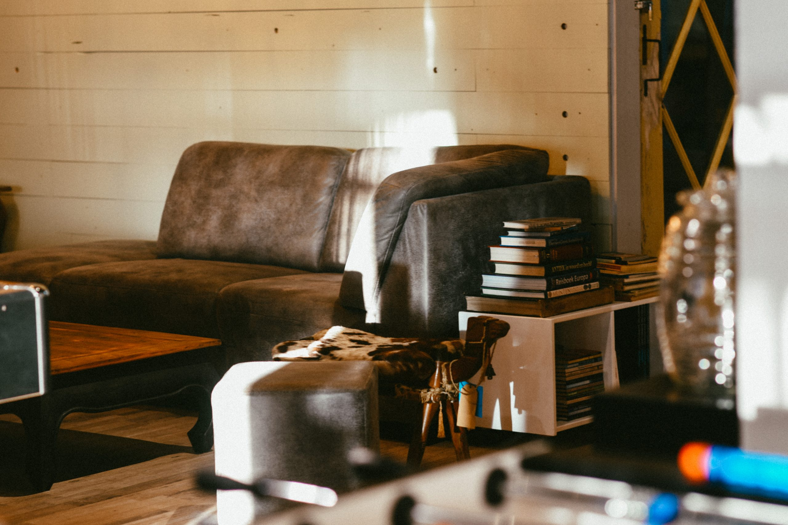
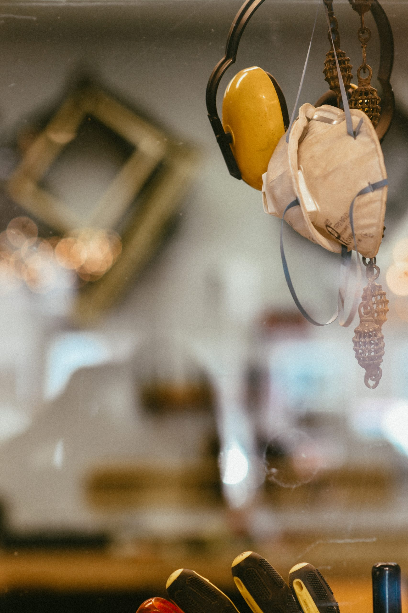
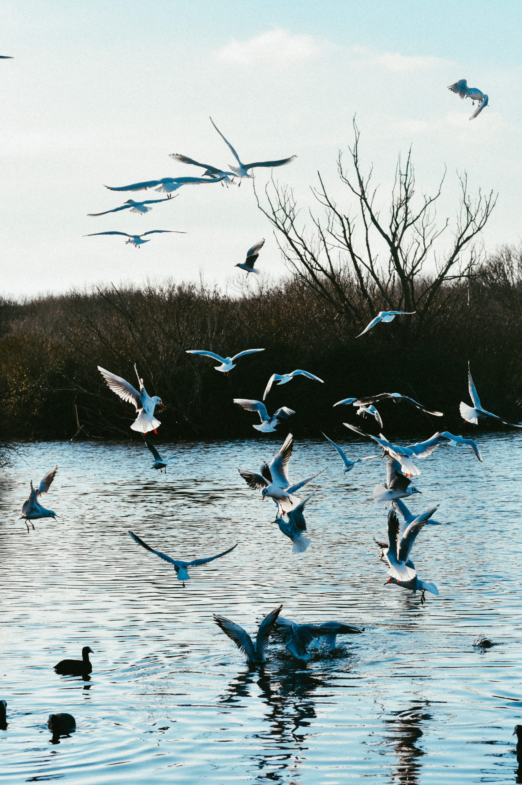
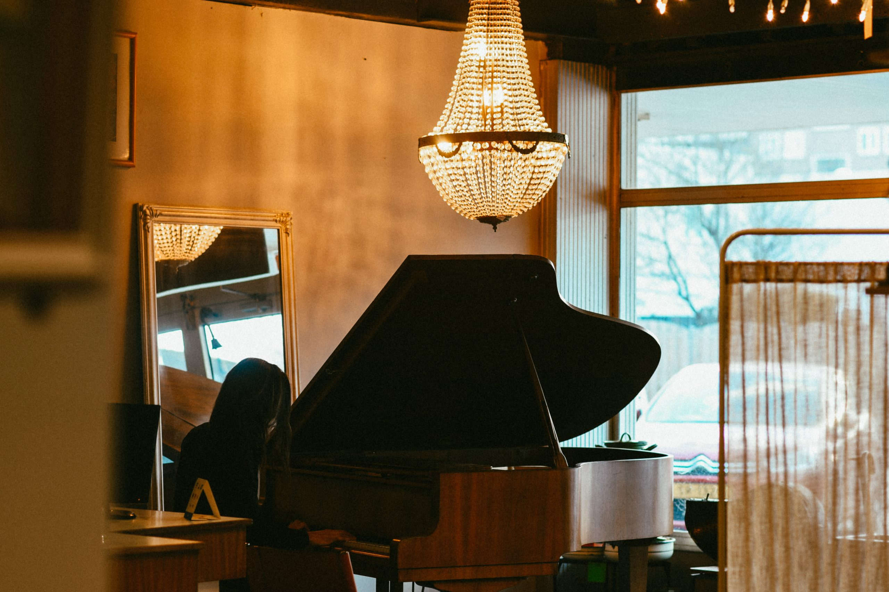
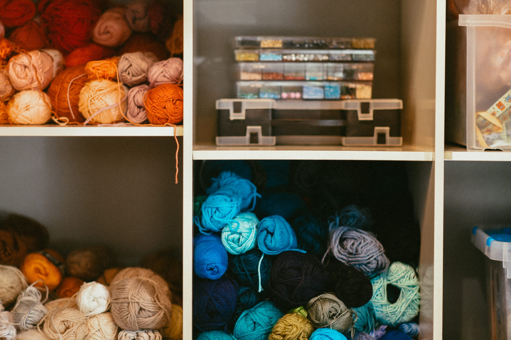
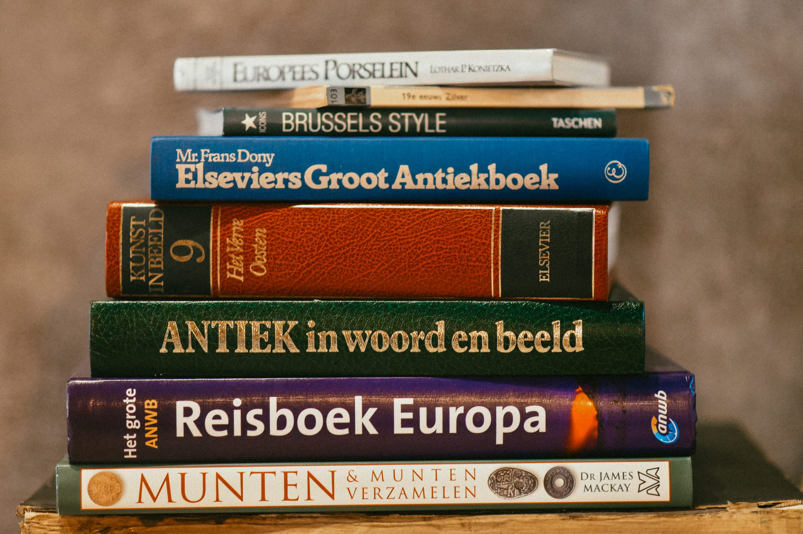
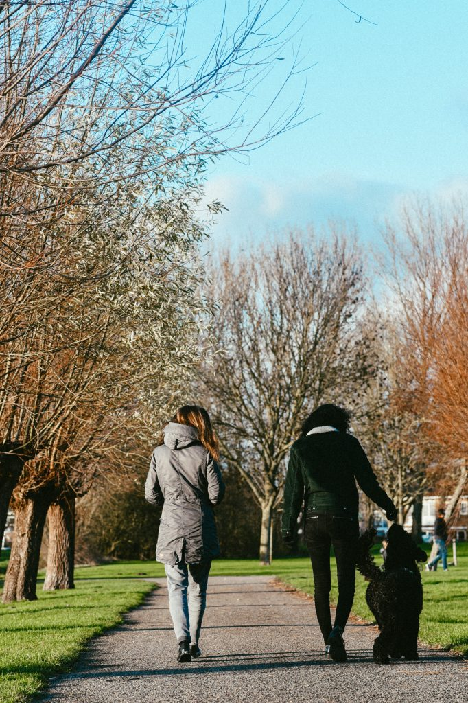

Winkeltje & webshop
Kleine meubels en accessoires ophalen, opknappen, fotograferen, etaleren en verkopen. Ook klantcontact en financiën oefenen we hier.

Aanbod
Leren van en met elkaar. Jouw kwaliteiten staan centraal, eigen initiatief wordt gesteund.
Binnen ons ruime aanbod gebruiken we de krachten van cliënten. We richten ons, waar mogelijk, op vaardigheden die nodig zijn om weer mee te doen op school of werk. Is terugkeer niet mogelijk, dan bieden we een zinvolle dagstructuur zodat sociaal isolement wordt voorkomen.
We werken intensief samen met het netwerk rondom jou. En we hebben een signalerende rol als er zorgen zijn. Het centrum is een veilig klimaat om te groeien.

Actief & productief

Kleine meubels en accessoires ophalen, opknappen, fotograferen, etaleren en verkopen. Ook klantcontact en financiën oefenen we hier.

Dagelijks een gezonde lunch. Recepten, boodschappen, schoonmaken, afwas, budget en samenwerken: voor ieder wat wils.

Wekelijks de natuur opruimen. In beweging, frisse lucht en een zichtbare bijdrage aan een schone leefomgeving.
Creatief & leerzaam

Wekelijks les van Virgil Piqué van Piqué’s Place. Passie voor muziek en mensen, met energie die aanstekelijk is.

Meubels opknappen, sieraden maken of eigen projecten. Om de week schilderles van Magda van der Burght.

In de studieruimte werken aan schoolse vaardigheden, planning, overzicht en studievaardigheden.
Spel & beweging
Poolen, tafelvoetbal, tafeltennis en bordspellen. Op donderdagmiddag is er een quiz of gezamenlijk spel. Dagelijks wandelen we met onze centrumdoodles Bonny en Teddy.
Vraag een kennismaking aan